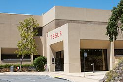

A vállalatot 2003-ban alapította Martin Eberhard, JB Straubel, Marc Tarpenning és Ian Wright.
Nevét a szerb származású amerikai feltalálóról, Nikola Tesláról kapta.
2004-ben Elon Musk 6,5 millió dollárt fektetett magánvagyonából a cégbe.
A cégalapítók sok más befektetőt is megkerestek, de csak Musk látott elég fantáziát a cég víziójában,
melynek fő céljával – az amerikai olajfüggőség csökkentése – maga is egyetértett.
Befektetésével Musk a cég főrészvényese, és a vállalat elnöke lett,
a következő években még több tízmillió dollárt fektetett a cégbe a beindításához.
A vállalat első terméke a Tesla Roadster volt, ami 2008-ban került sorozatgyártásba.
A Roadster egy teljes mértékben elektromos meghajtású sportautó.
Forgalmazására a vállalat weboldalán keresztül és koncesszióban, a világ számos pontján kerül sor.
Az oldal a Star Gate nevet kapta és az első 220 Roadster eladását jegyezte négy hónap alatt.
A 2008-ban és 2009-ben gyártott, körülbelül ezer járművet előre lefoglalták az amerikai ügyfelek,
akik a márka első piacát képezték. Első európai bemutatkozása során, 2008. április 25. és 28. között Monacóban,
a márka olyan hírességek érdeklődését is felkeltette, mint Albert monacói herceg, Damon Hill egykori Formula–1 bajnok,
valamint Bono a U2 zenekar énekese. A Roadster európai forgalmazása – Limited Edition név alatt – 2009-ben kezdődött,
egy limitált 250 darabos sorozattal.
